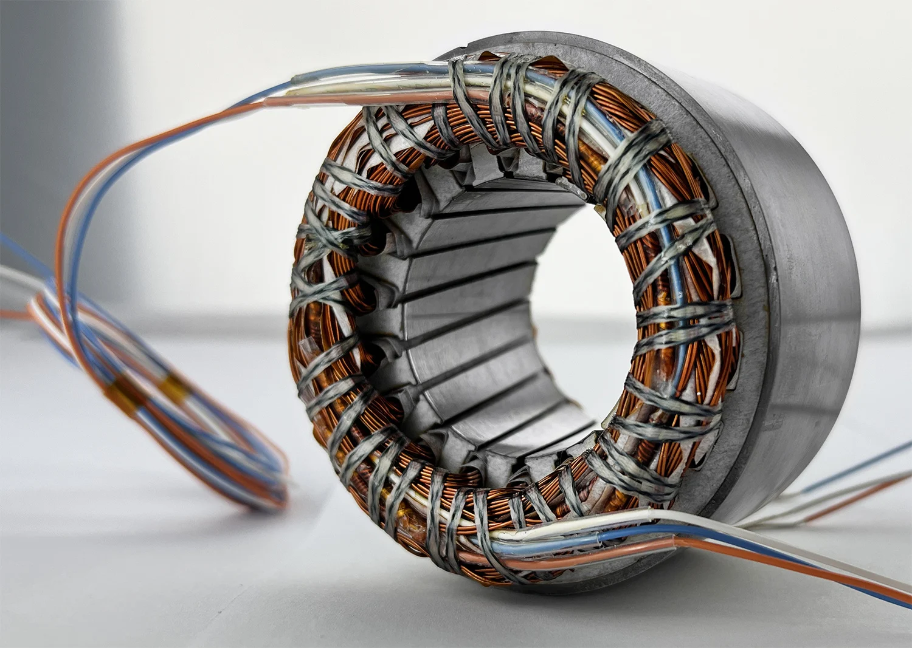
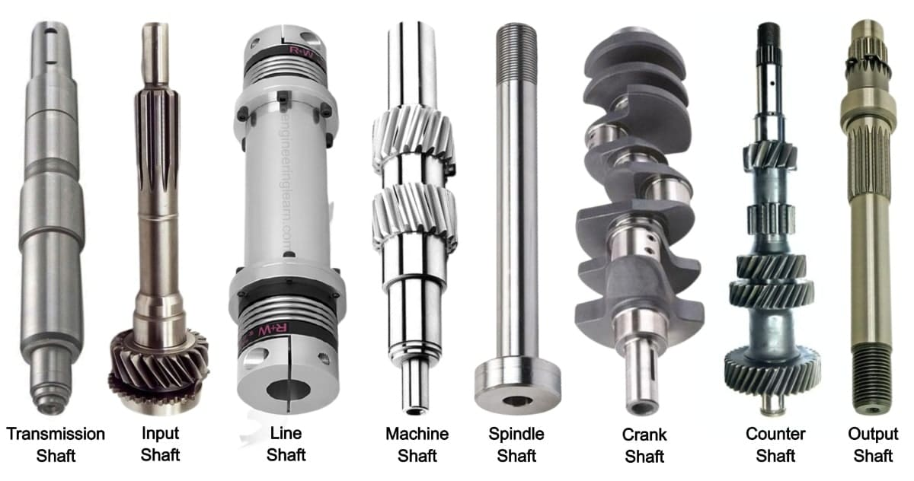
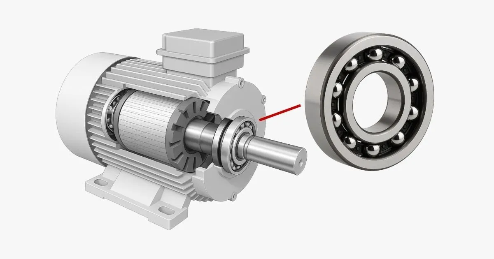
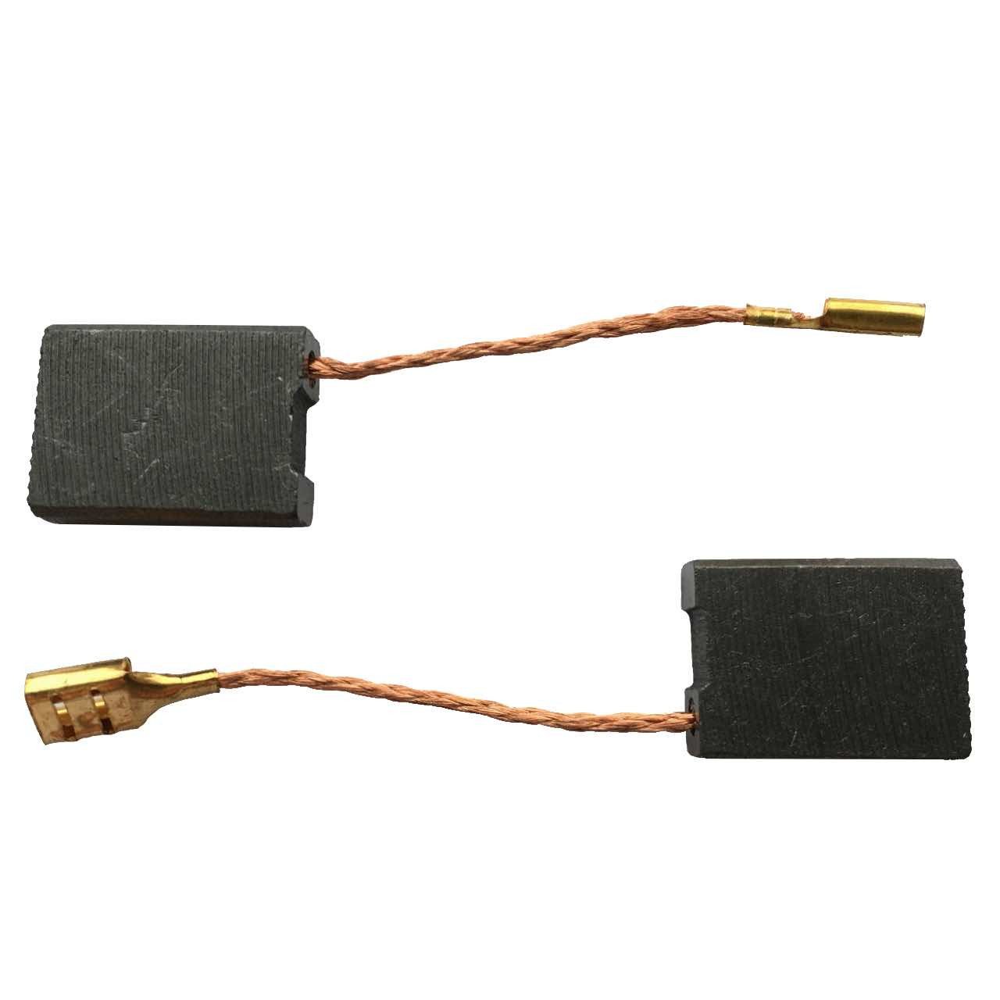
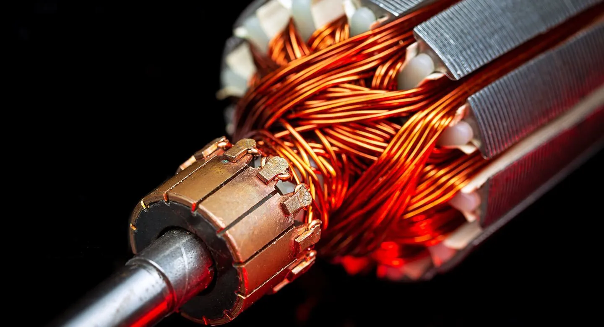
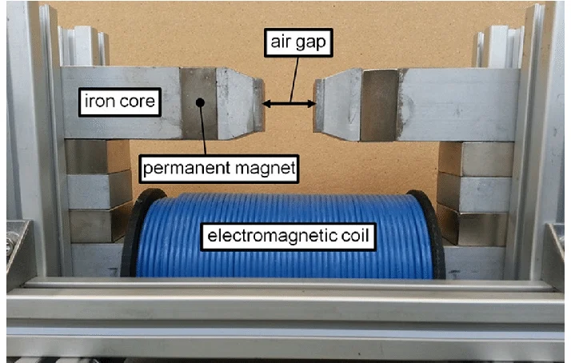
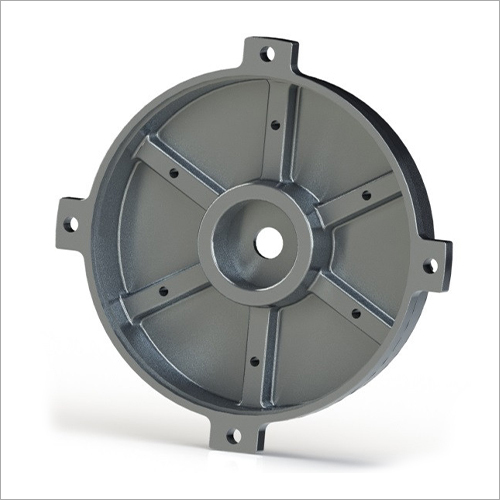
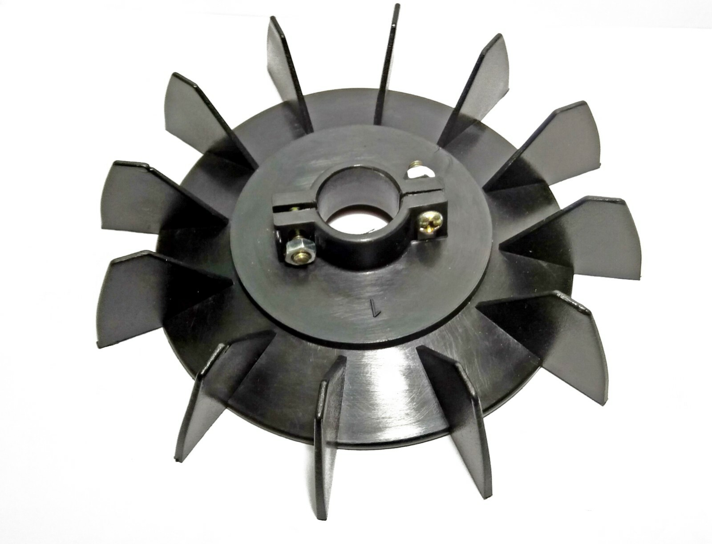
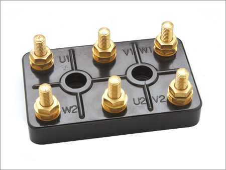

1. Stator (स्टेटर)
Stator motor ka wo stationary (स्थिर) part hota hai jo bina hile apni jagah par fix rehta hai aur motor ke chalne ke liye zaroori primary magnetic field generate karta hai. Jab AC supply isme di jaati hai, toh yeh ek Rotating Magnetic Field (RMF) paida karta hai.
- Material: Silicon Steel Laminations (Eddy current loss kam karne ke liye).
- Main Work: Rotor ko ghumane ke liye magnetic flux paths provide karna.

2. Rotor / Armature (रोटर / आर्मेचर)
Rotor motor ka ghumne wala (rotating) part hota hai jo Stator ke andar set hota hai. Jab stator ka magnetic field rotor ke conductors ke sath interact karta hai, toh Lorentz force ke mutabik rotor ghumne lagta hai aur shaft ko rotate karta hai.
- Types: Squirrel Cage Rotor aur Slip Ring / Wound Rotor.
- Main Work: Electrical magnetic energy ko mechanical mechanical torque me badalna.

3. Shaft (शाफ्ट)
Shaft ek cylindrical metal rod hoti hai jo sidhe rotor ke center core se judi hoti hai. Jab rotor magnetic energy se ghoomta hai, toh shaft bhi uske sath ghoomti hai aur mechanical movement ko bahar ke load (jaise fan blades ya pump impeller) tak transfer karti hai.
- Material: High-tensile Carbon Steel (Torsional load jhelne ke liye).
- Main Work: Rotational mechanical kinetic energy ko load tak safely pahunchana.

4. Bearings (बियरिंग्स)
Bearings shaft ko uski linear path position par support karte hain aur motor housing ke andar shaft ke rotational motion ke dauran paida hone wale physical friction (घर्षण) ko minimize karte hain. Inki lubrication zaroori hoti hai.
- Types: Ball Bearings (Small/Medium motors) aur Roller Bearings (Heavy Industry motors).
- Main Work: Shaft ko smooth execution rotation dena aur radial loads sustain karna.

5. Commutator (कम्यूटेटर - DC Motors Only)
Commutator copper segments se bana ek ring-like system hota hai jo sirf DC machines ya Universal motors me shaft par laga hota hai. Yeh rotating armature winding me current ki direction ko dynamically reverse (उल्टा) karta reha hai taaki torque unidirectional (ek hi disha me) bana rahe.
- Material: Hard-drawn Copper segments separated by Mica insulation.
- Main Work: AC to DC mechanical rectification aur mechanical current reversal switching loop.

6. Brushes (कार्बन ब्रश - DC Motors Only)
Brushes stationary external terminals aur ghumne wale commutator segment ke beech me ek continuous soft physical bridge banate hain. Yeh fixed power line se electricity lekar rotating parts tak spark-free delivering ensure karte hain.
- Material: Carbon / Graphite material (Self-lubricating aur copper wear down bachane ke liye).
- Main Work: Static wire lines se copper rotating commutator segments tak electrical current link deliver karna.

7. Windings / Coils (वाइंडिंग्स)
Windings high-grade insulated copper conductors ke loops hote hain jo stator slots me ya phir rotor armature slots me standard pattern me lapete jaate hain. Jab current isme se flow karta hai, toh electromagnetic electromagnetism dynamic core create hota hai.
- Material: Enamelled Copper Wire (Super magnet wire standard).
- Main Work: Electricity energy absorb karke physical electromagnetic flux lines generate karna.

8. Permanent Magnets or Field Coils (चुंबक / फील्ड कॉइल्स)
Motor me main core magnetic field dene ke do tarike hote hain: Chhoti motors (jaise toys, PMDC motors) me **Permanent Magnets** (स्थाई चुंबक) fixed frame par lage hote hain, jabki heavy industrial motors me **Field Coils** (इलेक्ट्रोमैग्नेट) lagakar supply se magnetism banaya jata hai.
- Sub-components: Neodymium magnets ya Soft Iron pole shoes field lines assembly.
- Main Work: Rotor conductor cutting matrix ke liye constant primary strong magnetic flux zone banana.

9. Frame / Housing (योकी / बॉडी)
Frame motor ki sabs bahari structural outer wall hoti hai jo poori machine ke internal structure, stator winding aur cores ko securely hold karti hai. Yeh motor ko external environment impacts dust, moisture aur physical damages se protect karta hai.
- Material: Cast Iron ya Die-cast Aluminum alloy framework casing.
- Main Work: Internal parts mechanical support aur DC motors me magnetic path (Yoke path flux flow) pura karna.

10. End Covers / End Bells (एंड कवर्स)
End Covers motor frame ke dono aage aur peeche ke sides me fit kiye jaane waale heavy structural plates hote hain. Inke central point centers par space hoti hai jo bearings ko exact fixed aligned place par fit karke rotor shaft structural balance lock karti hai.
- Material: Cast Iron matching frame design structure.
- Main Work: Bearings aur shaft balance rotation line ko static dynamic frame system ke sath exact align rakhna.

11. Cooling Fan (कूलिंग फैन)
Winding me hone wale continuous electrical current flow ke karan paida hone wali extra heat ($I^2R$ heat loss) ko remove karne ke liye motor shaft ke pichle end part par ek **Cooling Fan** fix hota hai. Yeh fan frame fins par air blow karke temperature reduce karta hai.
- Material: Reinforced Rigid Plastic ya Light Sheet Aluminum structure.
- Main Work: Continuous forced air ventilation flow create karke winding insulation breakdown thermal damages se bachana.

12. Terminal Box (टर्मिनल बॉक्स)
Terminal Box motor frame ke upar ya side me laga ek secure electrical connection enclosure hota hai. Iske andar internal copper winding connection leads brass studs ke upar terminate hoti hain jahan main external incoming grid supply direct connect ki jaati hai.
- Configuration: Star / Delta configurations blocks setup option plates.
- Main Work: Safe incoming power network system link points connection deliver karna.
